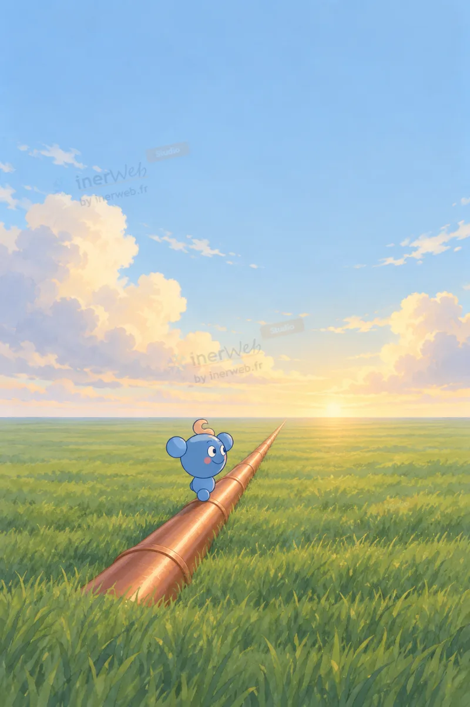
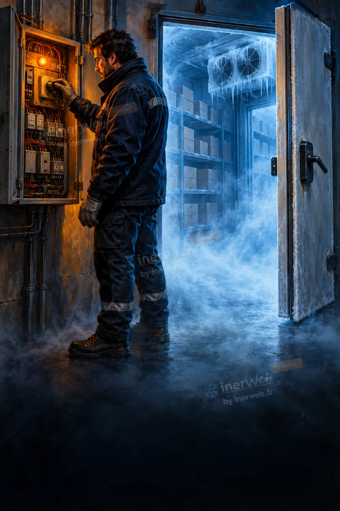
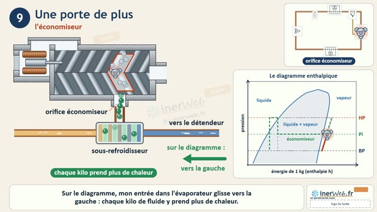
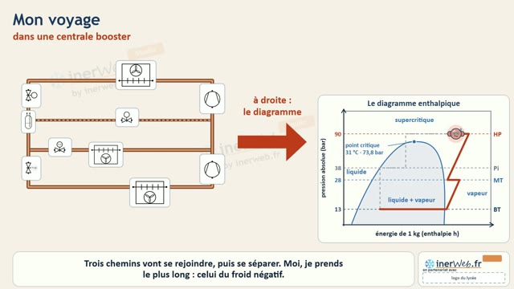
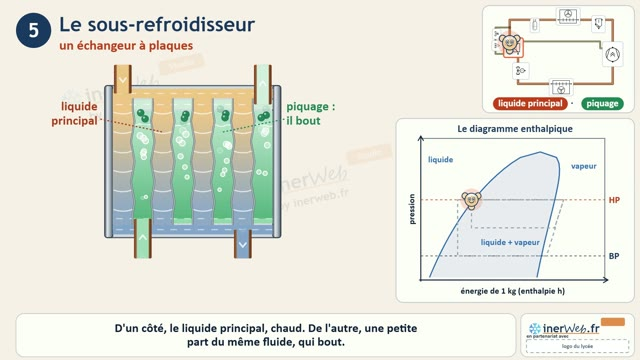
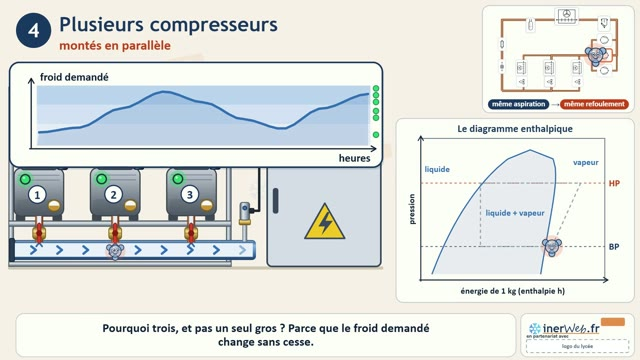
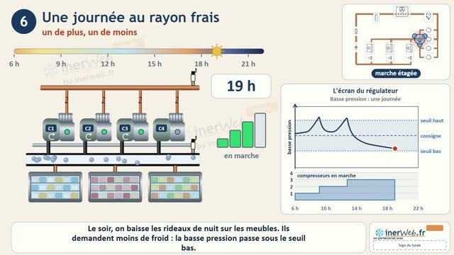
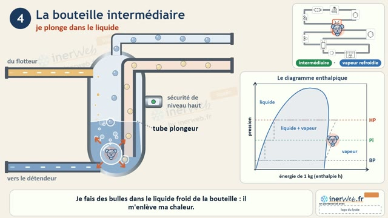
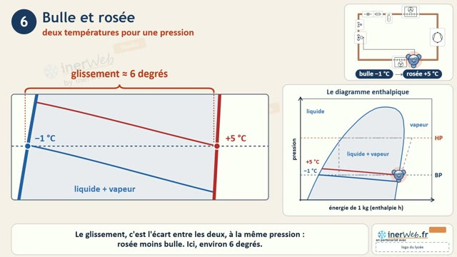

-

Saga · 10 tomes Voyage dans tous ses étatsSaga. Un road-movie à hauteur de molécule : le circuit frigorifique, puis d'autres fluides et d'autres machines.
-

Série · saison 1 La régulationSérie. Onze épisodes courts dans la même chambre froide : à chaque fois un contact de plus, et le fluide obéit.
-
Documentaire
Effet de serre, PRP et climat
Documentaire. Une minute pour comprendre pourquoi un kilo de fluide pèse des tonnes de CO₂.
-
Documentaire
Couche d'ozone et ODP
Documentaire. Un bouclier fin comme une feuille, une fuite qui monte, et le monde qui signe à Montréal.
Voyage dans tous ses états
- De quoi ça parle.
- Une molécule de fluide frigorigène quitte l'évaporateur, se fait comprimer, se condense, se détend, et revient à son point de départ pour recommencer. Le film ne montre rien d'autre que ce qui se passe vraiment dans le tube, et c'est sa force. Tome après tome, elle change de fluide (ammoniac, CO₂) puis de machine (compresseur à vis, centrale, booster, bi-étagé), et son chemin se dessine en même temps sur le diagramme enthalpique.
- Ce qu'on sait à la fin.
- Nommer les quatre organes du circuit, dire l'état du fluide à chaque endroit, et retrouver le même chemin sur le diagramme.
- À voir.
- Le tome 1 dès les premières semaines de CAP ; les tomes 2 à 10 en Bac Pro et BTS, chacun juste avant la station de sa machine.
Un road-movie à hauteur de molécule.
Tomes 1 à 3 — trois fluides Le même voyage, dans trois fluides différents.
 ▶ voir8 min 57
▶ voir8 min 57
Tome 1
Le circuit de base
Une molécule fait le tour d'une chambre froide : évaporateur, compresseur, condenseur, détendeur, puis la fuite et la récupération. 13 épisodes.
 ▶ voir9 min 51
▶ voir9 min 51
Tome 2
Édition NH₃
L'ammoniac dans une installation industrielle en régime noyé : bouteille séparatrice, compresseur ouvert, séparateur d'huile, condenseur évaporatif. Après le tome 1. 12 épisodes.
 ▶ voir9 min 36
▶ voir9 min 36
Tome 3
Édition CO₂
Le CO₂ transcritique d'un supermarché : le point critique, le refroidisseur de gaz, la bouteille intermédiaire, la neige carbonique. Après le tome 1. 13 épisodes.
Tomes 4 à 10 — les machines et les régulations La même molécule dans d'autres installations, avec le diagramme enthalpique qui avance en même temps.

▶ voir9 min 05Tome 4
Le compresseur à vis
Les rotors, l'alvéole qui se ferme sans clapet, l'huile injectée, le tiroir, l'économiseur. Après le tome 1. 13 épisodes.

▶ voir10 min 36Tome 5
La centrale booster CO₂
Une seule centrale pour le froid positif et le froid négatif : les deux étages, et le cycle chiffré sur le diagramme. Après le tome 3. 13 épisodes.

▶ voir9 min 48Tome 6
Le sous-refroidisseur de liquide
Deux tours dans l'échangeur : le liquide principal se refroidit, le piquage bout puis entre dans les vis par l'économiseur. Après le tome 4. 14 épisodes.

▶ voir10 min 09Tome 7
Les centrales frigorifiques
La centrale d'un supermarché : les meubles, les compresseurs en parallèle, la basse pression qui commande, le variateur. Après le tome 1. 13 épisodes.

▶ voir11 min 29Tome 8
La régulation d'une centrale
Le cerveau d'une centrale à quatre compresseurs : zone neutre, temporisations, permutation, haute pression fixe ou flottante. Après le tome 7. 15 épisodes.

▶ voir9 min 19Tome 9
L'installation bi-étagée
L'ammoniac monte en deux étages pour faire très froid : deux compresseurs, la bouteille intermédiaire, la détente en deux fois. Après le tome 2. 13 épisodes.

▶ voir10 min 56Tome 10
Le glissement
Trois molécules du R407C dans une climatisation : pourquoi un mélange bout en se réchauffant, la bulle et la rosée, la charge en liquide. Après le tome 1. 13 épisodes.
La régulation — saison 1
- De quoi ça parle.
- Une chambre froide, son schéma électrique à gauche, son circuit frigorifique à droite. On regarde un contact se fermer et le fluide obéir : le thermostat, le pressostat, la vanne, l'horloge de dégivrage. La saison monte en difficulté : la commande directe d'abord, les pump-down ensuite, les dégivrages pour finir.
- Ce qu'on sait à la fin.
- Lire un schéma de commande de chambre froide et dire, contact par contact, ce que fait l'installation.
- À voir.
- En CAP 2e année et en Bac Pro, chaque épisode juste avant sa station, qui porte les planches pas à pas et les questions.
Toujours le même décor, et à chaque épisode un contact de plus.
Les onze épisodes
 ▶ voir1 min 38
▶ voir1 min 38
Épisode 1 · station 1
La commande directe
Le thermostat commande le compresseur directement : le contact se ferme, le froid part.
 ▶ voir1 min 38
▶ voir1 min 38
Épisode 2 · station 2
La protection minimum
Un pressostat basse pression en série protège le compresseur quand la pression tombe trop bas.
 ▶ voir59 s
▶ voir59 s
Épisode 3 · station 2
La migration de liquide
À l'arrêt, le fluide migre vers le carter du compresseur ; au redémarrage, la casse guette.
 ▶ voir1 min 47
▶ voir1 min 47
Épisode 4 · station 3
Le pump-down automatique
Le thermostat ferme la vanne, le compresseur vide l'évaporateur, le pressostat l'arrête.
 ▶ voir1 min 44
▶ voir1 min 44
Épisode 5 · station 4
Le pump-down amélioré
Le même tirage au vide, sans les courts cycles du compresseur.
 ▶ voir1 min 46
▶ voir1 min 46
Épisode 6 · station 5
Le pump-down unique
Un seul tirage au vide à chaque arrêt, et ce que fait l'installation en cas de fuite.
 ▶ voir1 min 29
▶ voir1 min 29
Épisode 7 · station 6
Sans dégivrage commandé
Une chambre froide positive où le givre fond tout seul à l'arrêt, et la limite de cette solution.
 ▶ voir1 min 35
▶ voir1 min 35
Épisode 8 · station 7
Le dégivrage naturel
Une horloge arrête le froid à heures fixes ; le givre fond à l'air de la chambre.
 ▶ voir1 min 47
▶ voir1 min 47
Épisode 9 · station 8
Le dégivrage électrique
L'horloge coupe le froid et allume les résistances ; puis la reprise du froid après la fonte.
 ▶ voir1 min 36
▶ voir1 min 36
Épisode 10 · station 9
Le dégivrage par gaz chauds
Les gaz chauds du compresseur sont envoyés dans l'évaporateur pour faire fondre le givre.
 ▶ voir1 min 31
▶ voir1 min 31
Épisode 11 · station 10
Le dégivrage par inversion de cycle
Une vanne quatre voies inverse le circuit : l'évaporateur devient condenseur le temps de la fonte.
Effet de serre, PRP et climat
- De quoi ça parle.
- Le Soleil chauffe, la Terre renvoie, certains gaz piègent la chaleur, et le PRP met un chiffre sur chacun. Court, net, sans détour.
- Ce qu'on sait à la fin.
- Expliquer l'effet de serre en trois phrases et lire un PRP.
- À voir.
- Avant la station PRP et ODP, et avant toute séance sur la réglementation des fluides.
Une minute pour comprendre pourquoi un kilo de fluide pèse des tonnes de CO₂.
Couche d'ozone et ODP
- De quoi ça parle.
- La couche d'ozone protège le vivant des ultraviolets. Une fuite de fluide chloré monte, la détruit, et le monde entier signe un accord pour l'arrêter : Montréal, 1987. Le film tient en moins d'une minute, et on s'en souvient.
- Ce qu'on sait à la fin.
- La différence entre ODP et PRP, et pourquoi les CFC ont disparu.
- À voir.
- Avec le film sur l'effet de serre, avant la station PRP et ODP.
Un bouclier fin comme une feuille, tout là-haut.